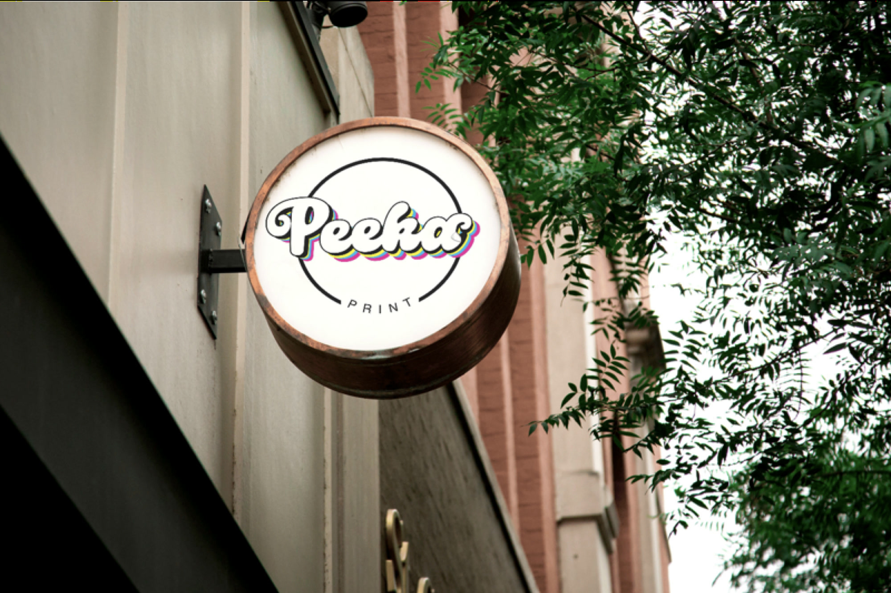
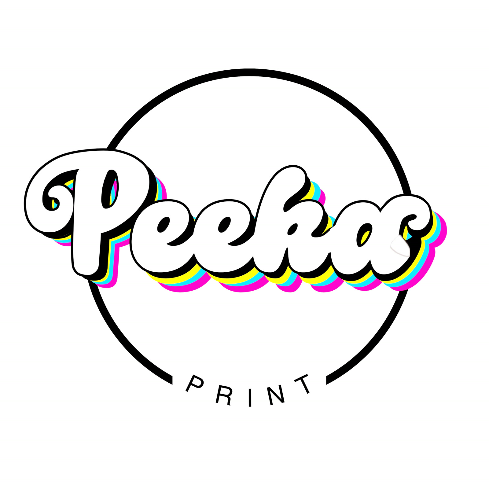
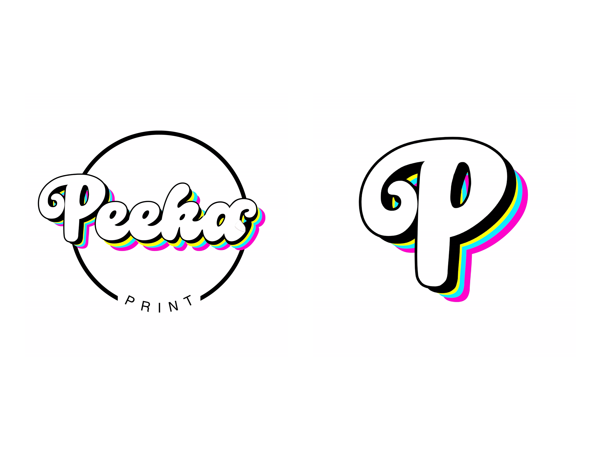

02 / Challenge
The question.
How can a print-oriented brand create a memorable identity that works at both small and large scales?
Case Study / 10
A graphic identity explored through logo variations and storefront signage.

PeekaPrint / Selected visual01 / Context
PeekaPrint includes a graphic logo, identity variations and signage mockups. This case study shows how its visual language can scale across contexts.
The identity is shown in multiple forms so its relationship to physical signage can be explored.
02 / Challenge
How can a print-oriented brand create a memorable identity that works at both small and large scales?
03 / Objectives
04 / Process
Logo treatments and signage examples are presented together to demonstrate scale, recognition and visual consistency.
05 / Solution
An identity system presented through logo treatments and signage applications.
06 / Visual explorations
Original project imagery, presented without changes to the source assets.


07 / Results
An identity system presented through logo treatments and signage applications.
Case study in progress. Add verified production details, client feedback and results when available.